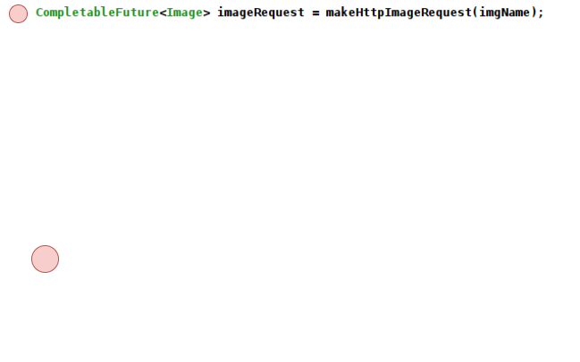
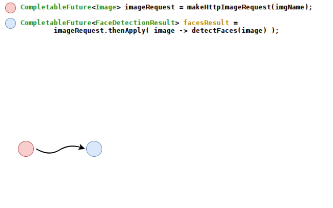
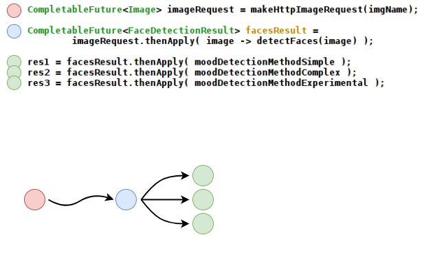
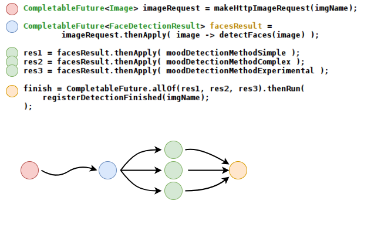
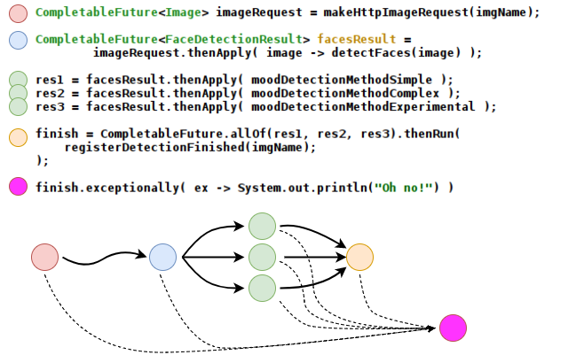

Java In Serverless Land
Fn
Fn Flow
Under the Hood of Fn Flow





Java In Container Land
Ubuntu / Debian / Oracle Linux base images can be 100s of MB, even the "slim" versions. We don't care much about the base image so long as it can run Java. Project Portola makes the JVM run on Alpine Linux/Musl.

Alpine Linux is a security-oriented, lightweight Linux distribution based on musl libc and busybox. Alpine base image is 4mb (!)
Musl is lightweight, fast, simple, free, and strives to be correct in the sense of standards-conformance and safety.
Thank you for listening